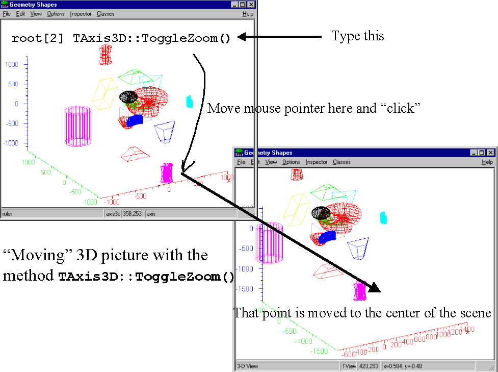
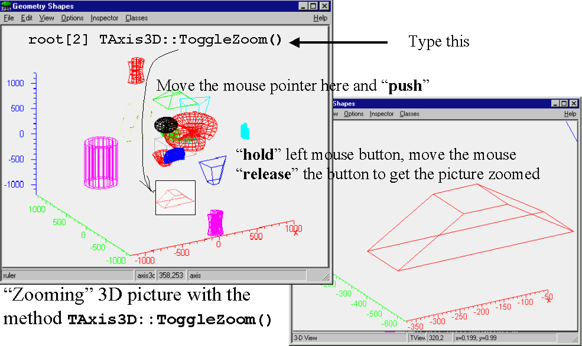
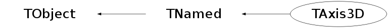

class TAxis3D: public TNamed
The 3D axis painter class This class provide up to 3 axice to any 3D ROOT plot and "ZOOM" service. ExecuteEvent() method does provide zooming and moving a projection 3D object within TPad client area. With Zoom mode on the user can access TAxis3D context menu and set /change the attributes of axice all together or separately. To add the 3D rulers to any 3D view one has to create an instance of this class and Draw it. TAxis3D rulers; rulers.Draw(); One can use a static method to create ruler and attach it to the current gPad TAxis3D::ToggleRulers(); // Brings the 3D axice up TAxis3D::ToggleRulers(); // next calls remove the rulers from the TPad etc To activate Zoomer one may call TAxis3D::ToggleZoom(); each time one needs move or zoom the image. Then the user can: - move:

- zoom:

its 3D view with <left-mouse button> press / move. The "Zoom" deactivates itself just the user release the <left-mouse button> To change attributes of the rulers attached to the current Pad, one may query its pointer first: TAxis3D *axis = TAxis3D::GetPadAxis(); // Ask axis pointer if (axis) { TAxis3D::ToggleRulers() // To pop axice down axis->SetLabelColor(kBlue); // Paint the axice labels with blue color axis->SetAxisColor(kRed); // Paint the axice itself with blue color TAxis3D::ToggleRulers() // To pop axice up } The attributes of the created axice are affected by the current style (see TStyle class ) and Set... methods of this class For example: gStyle->SetAxisColor(kYellow,"X"); gStyle->SetAxisColor(kYellow,"Y"); gStyle->SetAxisColor(kYellow,"Z"); gStyle->SetLabelColor(kYellow,"X"); gStyle->SetLabelColor(kYellow,"Y"); gStyle->SetLabelColor(kYellow,"Z"); TAxis3D::ToggleRulers(); TAxis3D::ToggleRulers(); will draw all axice and labels with yellow color.
Function Members (Methods)
public:
| TAxis3D() | |
| TAxis3D(Option_t* option) | |
| TAxis3D(const TAxis3D& axis) | |
| virtual | ~TAxis3D() |
| void | TObject::AbstractMethod(const char* method) const |
| virtual void | TObject::AppendPad(Option_t* option = "") |
| virtual void | Browse(TBrowser* b) |
| static TClass* | Class() |
| virtual const char* | TObject::ClassName() const |
| virtual void | TNamed::Clear(Option_t* option = "") |
| virtual TObject* | TNamed::Clone(const char* newname = "") const |
| virtual Int_t | TNamed::Compare(const TObject* obj) const |
| virtual void | TObject::Delete(Option_t* option = "")MENU |
| virtual Int_t | DistancetoPrimitive(Int_t px, Int_t py) |
| virtual void | TObject::Draw(Option_t* option = "") |
| virtual void | TObject::DrawClass() constMENU |
| virtual TObject* | TObject::DrawClone(Option_t* option = "") constMENU |
| virtual void | TObject::Dump() constMENU |
| virtual void | TObject::Error(const char* method, const char* msgfmt) const |
| virtual void | TObject::Execute(const char* method, const char* params, Int_t* error = 0) |
| virtual void | TObject::Execute(TMethod* method, TObjArray* params, Int_t* error = 0) |
| virtual void | ExecuteEvent(Int_t event, Int_t px, Int_t py) |
| virtual void | TObject::Fatal(const char* method, const char* msgfmt) const |
| virtual void | TNamed::FillBuffer(char*& buffer) |
| virtual TObject* | TObject::FindObject(const char* name) const |
| virtual TObject* | TObject::FindObject(const TObject* obj) const |
| virtual Color_t | GetAxisColor(Option_t* axis = "X") const |
| virtual void | GetCenter(Axis_t* center) |
| virtual Option_t* | TObject::GetDrawOption() const |
| static Long_t | TObject::GetDtorOnly() |
| virtual const char* | TObject::GetIconName() const |
| virtual Color_t | GetLabelColor(Option_t* axis = "X") const |
| virtual Style_t | GetLabelFont(Option_t* axis = "X") const |
| virtual Float_t | GetLabelOffset(Option_t* axis = "X") const |
| virtual Float_t | GetLabelSize(Option_t* axis = "X") const |
| virtual void | GetLowEdge(Axis_t* edge) |
| virtual const char* | TNamed::GetName() const |
| virtual Int_t | GetNdivisions(Option_t* axis = "X") const |
| virtual char* | GetObjectInfo(Int_t px, Int_t py) const |
| static Bool_t | TObject::GetObjectStat() |
| virtual Option_t* | GetOption() const |
| static TAxis3D* | GetPadAxis(TVirtualPad* pad = 0) |
| virtual Float_t | GetTickLength(Option_t* axis = "X") const |
| virtual const char* | TNamed::GetTitle() const |
| virtual Float_t | GetTitleOffset(Option_t* axis = "X") const |
| virtual UInt_t | TObject::GetUniqueID() const |
| virtual TAxis* | GetXaxis() |
| virtual TAxis* | GetYaxis() |
| virtual TAxis* | GetZaxis() |
| virtual Bool_t | TObject::HandleTimer(TTimer* timer) |
| virtual ULong_t | TNamed::Hash() const |
| virtual void | TObject::Info(const char* method, const char* msgfmt) const |
| virtual Bool_t | TObject::InheritsFrom(const char* classname) const |
| virtual Bool_t | TObject::InheritsFrom(const TClass* cl) const |
| virtual void | TObject::Inspect() constMENU |
| void | TObject::InvertBit(UInt_t f) |
| virtual TClass* | IsA() const |
| virtual Bool_t | TObject::IsEqual(const TObject* obj) const |
| virtual Bool_t | IsFolder() const |
| Bool_t | TObject::IsOnHeap() const |
| virtual Bool_t | TNamed::IsSortable() const |
| Bool_t | TObject::IsZombie() const |
| virtual void | TNamed::ls(Option_t* option = "") const |
| void | TObject::MayNotUse(const char* method) const |
| virtual Bool_t | TObject::Notify() |
| void | TObject::Obsolete(const char* method, const char* asOfVers, const char* removedFromVers) const |
| static void | TObject::operator delete(void* ptr) |
| static void | TObject::operator delete(void* ptr, void* vp) |
| static void | TObject::operator delete[](void* ptr) |
| static void | TObject::operator delete[](void* ptr, void* vp) |
| void* | TObject::operator new(size_t sz) |
| void* | TObject::operator new(size_t sz, void* vp) |
| void* | TObject::operator new[](size_t sz) |
| void* | TObject::operator new[](size_t sz, void* vp) |
| TNamed& | TNamed::operator=(const TNamed& rhs) |
| virtual void | Paint(Option_t* option = "") |
| void | PaintAxis(TGaxis* axis, Float_t ang) |
| static Double_t* | PixeltoXYZ(Double_t px, Double_t py, Double_t* point3D, TView* view = 0) |
| virtual void | TObject::Pop() |
| virtual void | TNamed::Print(Option_t* option = "") const |
| virtual Int_t | TObject::Read(const char* name) |
| virtual void | TObject::RecursiveRemove(TObject* obj) |
| void | TObject::ResetBit(UInt_t f) |
| virtual void | TObject::SaveAs(const char* filename = "", Option_t* option = "") constMENU |
| virtual void | SavePrimitive(ostream& out, Option_t* option = "") |
| virtual void | SetAxisColor(Color_t color = 1, Option_t* axis = "*")MENU |
| virtual void | SetAxisRange(Double_t xmin, Double_t xmax, Option_t* axis = "*") |
| void | TObject::SetBit(UInt_t f) |
| void | TObject::SetBit(UInt_t f, Bool_t set) |
| virtual void | TObject::SetDrawOption(Option_t* option = "")MENU |
| static void | TObject::SetDtorOnly(void* obj) |
| virtual void | SetLabelColor(Color_t color = 1, Option_t* axis = "*")MENU |
| virtual void | SetLabelFont(Style_t font = 62, Option_t* axis = "*")MENU |
| virtual void | SetLabelOffset(Float_t offset = 0.005, Option_t* axis = "*")MENU |
| virtual void | SetLabelSize(Float_t size = 0.02, Option_t* axis = "*")MENU |
| virtual void | TNamed::SetName(const char* name)MENU |
| virtual void | TNamed::SetNameTitle(const char* name, const char* title) |
| virtual void | SetNdivisions(Int_t n = 510, Option_t* axis = "*")MENU |
| static void | TObject::SetObjectStat(Bool_t stat) |
| virtual void | SetOption(Option_t* option = " ") |
| virtual void | SetTickLength(Float_t length = 0.02, Option_t* axis = "*")MENU |
| virtual void | TNamed::SetTitle(const char* title = "")MENU |
| virtual void | SetTitleOffset(Float_t offset = 1, Option_t* axis = "*")MENU |
| virtual void | TObject::SetUniqueID(UInt_t uid) |
| virtual void | SetXTitle(const char* title)MENU |
| virtual void | SetYTitle(const char* title)MENU |
| virtual void | SetZTitle(const char* title)MENU |
| virtual void | ShowMembers(TMemberInspector& insp) |
| virtual Int_t | TNamed::Sizeof() const |
| Bool_t& | StickyZoom() |
| virtual void | Streamer(TBuffer& b) |
| void | StreamerNVirtual(TBuffer& b) |
| virtual void | TObject::SysError(const char* method, const char* msgfmt) const |
| Bool_t | TObject::TestBit(UInt_t f) const |
| Int_t | TObject::TestBits(UInt_t f) const |
| static TAxis3D* | ToggleRulers(TVirtualPad* pad = 0) |
| static TAxis3D* | ToggleZoom(TVirtualPad* pad = 0) |
| virtual void | UseCurrentStyle() |
| virtual void | TObject::Warning(const char* method, const char* msgfmt) const |
| virtual Int_t | TObject::Write(const char* name = 0, Int_t option = 0, Int_t bufsize = 0) |
| virtual Int_t | TObject::Write(const char* name = 0, Int_t option = 0, Int_t bufsize = 0) const |
| Bool_t& | Zoom() |
protected:
| virtual void | Copy(TObject& hnew) const |
| virtual void | TObject::DoError(int level, const char* location, const char* fmt, va_list va) const |
| void | InitSet() |
| void | TObject::MakeZombie() |
| Bool_t | SwitchZoom() |
private:
| Int_t | AxisChoice(Option_t* axis) const |
| void | Build() |
Data Members
public:
| enum TObject::EStatusBits { | kCanDelete | |
| kMustCleanup | ||
| kObjInCanvas | ||
| kIsReferenced | ||
| kHasUUID | ||
| kCannotPick | ||
| kNoContextMenu | ||
| kInvalidObject | ||
| }; | ||
| enum TObject::[unnamed] { | kIsOnHeap | |
| kNotDeleted | ||
| kZombie | ||
| kBitMask | ||
| kSingleKey | ||
| kOverwrite | ||
| kWriteDelete | ||
| }; |
protected:
| TAxis | fAxis[3] | X/Y/Z axis |
| TString | TNamed::fName | object identifier |
| TString | fOption | Options (is not use yet) |
| TAxis* | fSelected | ! The selected axis to play with |
| Bool_t | fStickyZoom | StickyZoom mode: zoom will not be disabled after zooming attempt if true |
| TString | TNamed::fTitle | object title |
| Bool_t | fZoomMode | Zoom mode for the entire parent TPad |
| static const char* | fgRulerName | The default object name |
Class Charts
{kind=link}
{kind=link}
{kind=link}
{kind=link}

Function documentation
void ExecuteEvent(Int_t event, Int_t px, Int_t py)
Execute action corresponding to one event. This member function is called when an axis is clicked with the locator
void PaintAxis(TGaxis* axis, Float_t ang)
Draw the axis for TView object. The original idea belongs: void THistPainter::PaintLegoAxis(TGaxis *axis, Double_t ang)
Double_t * PixeltoXYZ(Double_t px, Double_t py, Double_t* point3D, TView* view = 0)
Convert "screen pixel" coordinates to some center of 3D WC coordinate
if view and gPad present
void SavePrimitive(ostream& out, Option_t* option = "")
Save primitive as a C++ statement(s) on output stream out
TAxis3D * ToggleRulers(TVirtualPad* pad = 0)
Turn ON / OFF the "Ruler", TAxis3D object attached to the current pad
TAxis3D * ToggleZoom(TVirtualPad* pad = 0)
Turn ON / OFF the "Ruler" and "zoom mode" of the TAxis3D object attached to the current pad (if pad = 0; gPad is used "by default") User is given a chance to either: 1. move the center of the 3D scene at the cursor position 2. zoom view with mouse "drugging" the bounder rectangle with "left" mouse 3. Change the axuce attributes via TContextMenu with "righ mouse button click"
void Build()